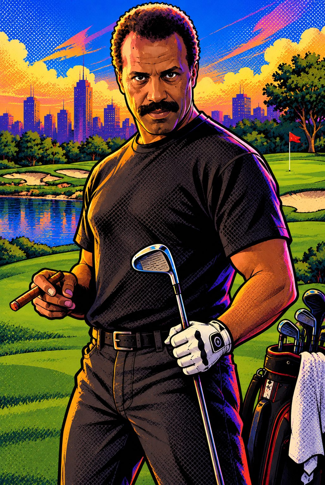

HOLE 1Pebble BeachPar 4
1STROKE
0YDS TO PIN
7 MPHwind
PIN
0y
PULL BACK
ZOOM
POWER
0 yds
Drag the yellow target to aim. Pinch with two fingers to zoom. Then pull straight back from the ball and let go as close to the middle of the rainbow as you can. The closer to the middle, the straighter and longer the shot.
TEE · 338 yds to pin
376 YDS · PAR 4
WIND 7 MPH
TAP TO SKIP
Loading…
Hole 1 · Par 4
BIRDIE!

THEFRED
7 HOLES · PAR 27
Pebble · Augusta · TPC · St Andrews · Pinehurst · Riviera
Pull back · release in the blue